Luminous відтворює музику, яка вже є на вашому комп’ютері. Щоб почати, бібліотека не потрібна.
Увімкніть щось просто зараз
•
У розділі Відтворення музики виберіть Відкрити файли або Відтворити папку.
•
Або перетягніть файли й папки у вікно.
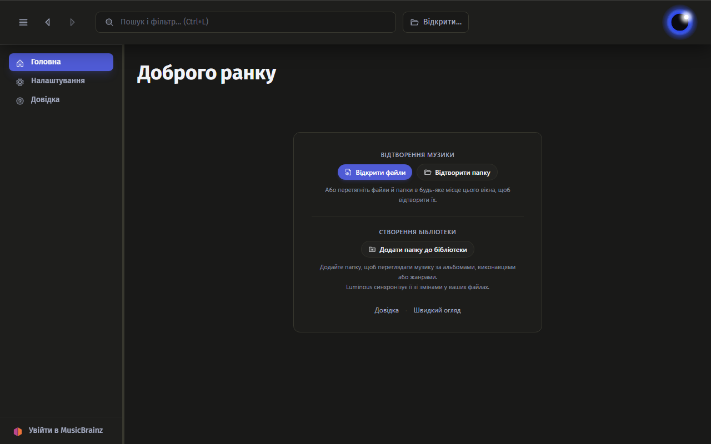
Створення бібліотеки
1
Виберіть Додати папку до бібліотеки у розділі Створення бібліотеки або додайте папку в Налаштування → Джерела.
2
Luminous сканує її, а потім стежить за змінами. Нові, переміщені й перейменовані файли оновлюються самі.
3
Переглядайте свою музику в розділі Колекція на бічній панелі.
Головна
•
Розділ «Головна» показує актуальний огляд вашої бібліотеки та прослуховування.
•
Найкращі альбоми впорядковує альбоми за хвилинами відтворення цього тижня. Позначка Повернення показує альбом, який знову потрапив до чарту.
•
Укажіть, з якого дня починається тиждень, у параметрі Початок тижня в розділі Налаштування → Загальні.
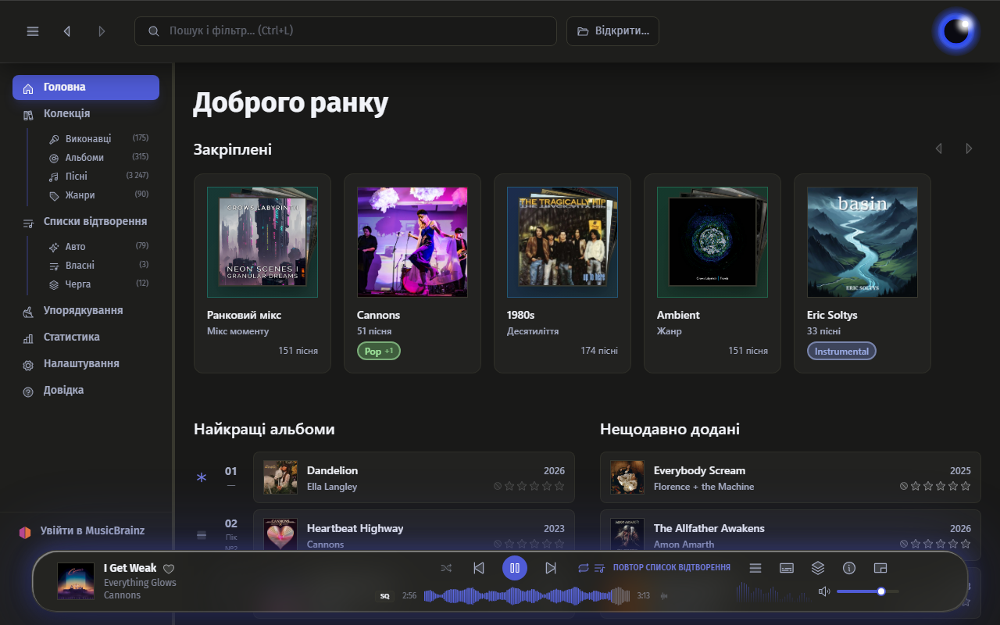
Швидкий огляд
•
Уперше в Luminous? Короткий огляд знайомить з інтерфейсом.
•
Перегляньте його знову будь-коли за допомогою Перезапустити огляд можливостей у розділі «Довідка».
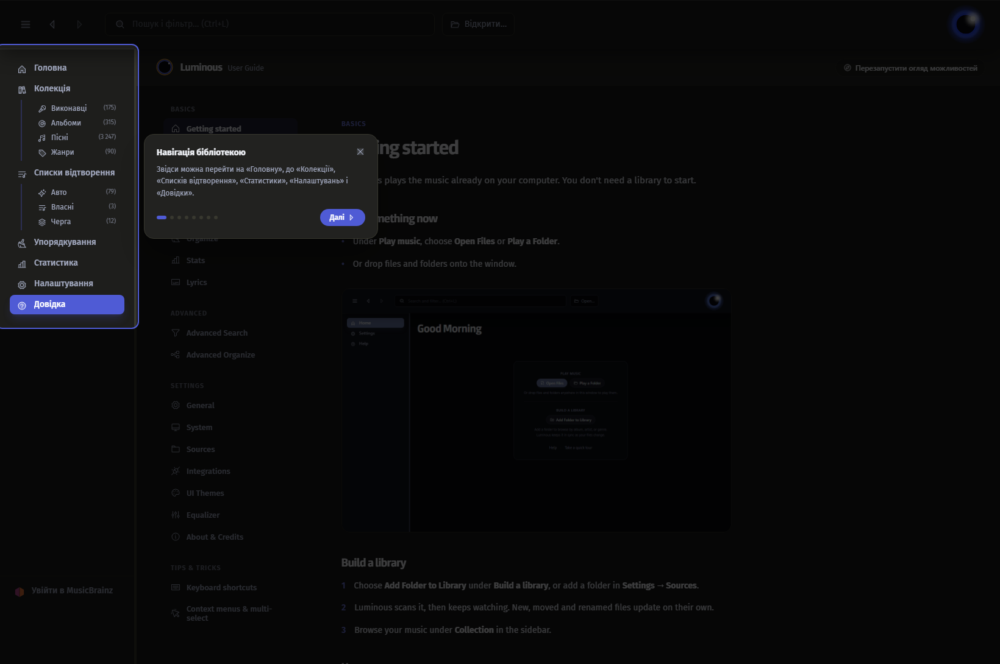
Основи
Ваша колекція
Колекція на бічній панелі має чотири подання: «Виконавці», «Альбоми», «Пісні» та «Жанри». Кожне показує кількість і елемент керування сортуванням угорі праворуч.
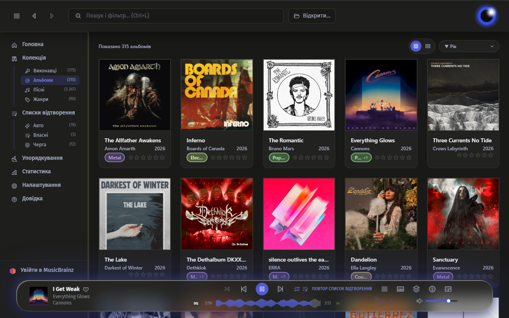
Пісні
•
Переглядайте всю бібліотеку як таблицю з можливістю сортування.
•
Клацніть правою кнопкою миші будь-який заголовок стовпця, щоб вибрати поля для відображення, наприклад Кількість відтворень і Кількість пропусків.
•
Перетягніть правий край заголовка стовпця, щоб змінити його ширину. Двічі клацніть край, щоб скинути ширину.
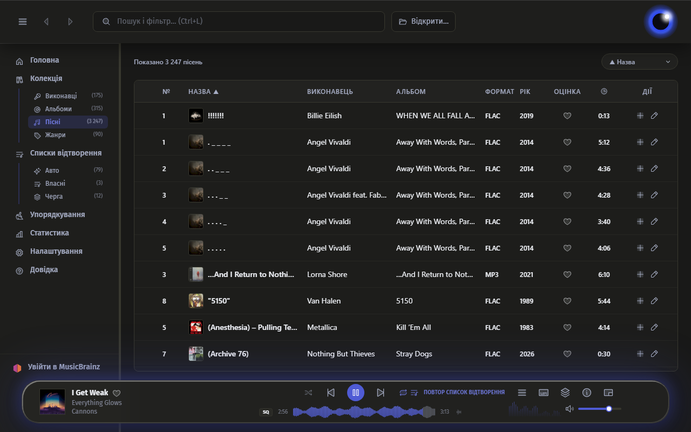
Жанри
•
Кожен жанр — це картка. Кількість її пісень охоплює піджанри.
•
Перетягніть мітку піджанру на іншу картку, щоб перемістити його, або перетягніть маркер картки, щоб зробити весь жанр піджанром.
•
Клацніть правою кнопкою миші мітку або заголовок картки й виберіть Перейменувати, Підвищити до жанру верхнього рівня або Видалити — тоді жанр буде видалено з усіх пісень.
•
Клацніть зразок кольору на картці, щоб змінити її колір.
•
Клацніть картку або мітку, щоб відкрити пов’язаний автосписок.
•
Теги, додані на сторінках виконавців, мають власні картки в розділі Теги виконавців над жанрами пісень.
•
Угорі праворуч перемикайтеся між поданням карток і рядків та сортуйте за назвою або кількістю пісень.
•
Пісні без жанру групуються в розділі Без жанру.
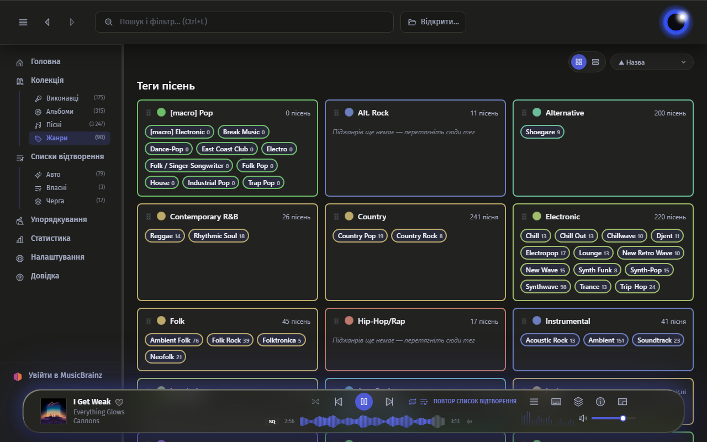
Альбоми
•
Відкрийте альбом, щоб побачити його композиції. Бічна панель показує формат, бітрейт, частоту дискретизації та гучність відтворюваного файлу.
•
Клацніть +, щоб додати альбом або пісню до активного списку відтворення (черги, якщо ви не вибрали інший).
•
Клацніть олівець, щоб відкрити вікно Редагування тегів альбому і одразу виправити назву, виконавця, жанр або рік усіх композицій.
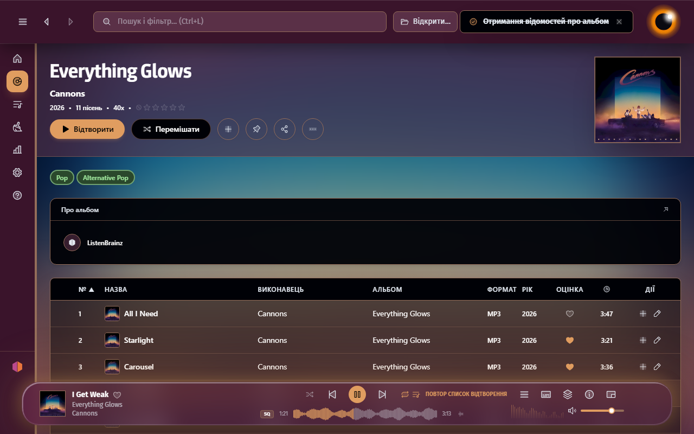
Редагування тегів
•
Клацніть олівець композиції, щоб відкрити вікно Редагування тегів пісні.
•
Поля «Виконавець», «Виконавець альбому», «Композитор» і «Жанр» приймають кілька значень. Натискайте Enter після кожного.
Рядок програвача розташований унизу вікна, поки грає музика.
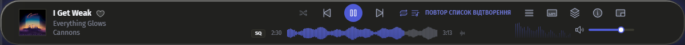
Рядок програвача
•
Клацніть обкладинку, щоб відкрити режим занурення (Ctrl2).
•
Клацніть серце або зірки, щоб оцінити пісню. Стиль вибирається в розділі Налаштування → Загальні.
•
Клацніть хвильову форму, щоб перейти до потрібного місця в пісні. Кнопка поруч перемикає на смуги частот: синій — для низьких, бурштиновий — для середніх, білий — для високих.
– Усередині альбому: альбоми за порядком, композиції в кожному перемішуються.
– Альбоми: альбоми перемішуються, композиції за порядком.
– Виконавці: по одному виконавцю, виконавці вибираються випадково.
•
Повтор перемикає значення: «Вимк.», «Пісня», «Альбом» і «Список відтворення».
•
Кнопки праворуч відкривають:
меню пісні
текст пісні
чергу
інформаційну панель (CtrlI)
міні-плеєр (CtrlM)
•
Медіаклавіші та системні елементи керування медіа працюють, навіть коли Luminous не на передньому плані.
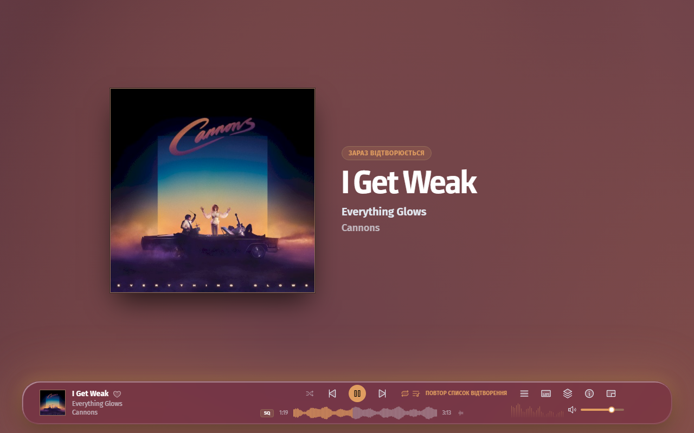
Міні-плеєр
•
Наведіть вказівник на міні-плеєр, щоб побачити його елементи керування й оцінити пісню.
•
Перетягніть його верхній край, щоб перемістити.
•
Кнопкою тексту перемикайтеся між обкладинкою та текстом пісні в реальному часі.
•
Клацніть Відновити повне вікно (CtrlM) унизу праворуч, щоб повернутися.
У спокої
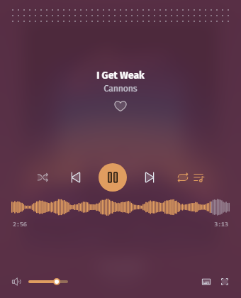
При наведенні
Основи
Списки відтворення
Списки відтворення бувають трьох видів:
•
Власні: створюйте самі, перетягуючи пісні.
•
Розумні: задайте правила, наприклад «Жанр — Рок і Рік після 2015», і Luminous підтримує список в актуальному стані.
•
Авто: списки за жанром, десятиріччям і BPM, які Luminous створює сам, до 25 пісень, що оновлюються щодня. Кожен з’являється, щойно набереться 25 відповідних пісень. Клацніть Оновити список, щоб отримати нову добірку.
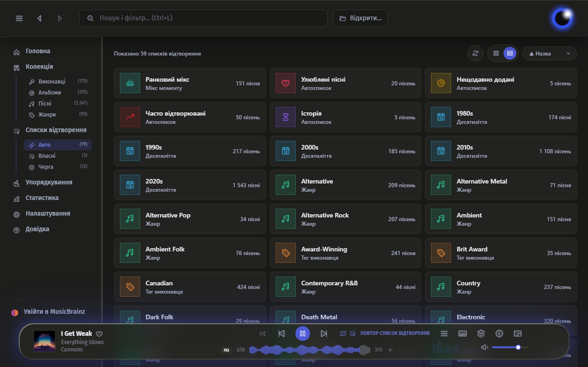
Додавання пісень
•
Клацніть + поруч із піснею або альбомом, щоб додати їх до черги.
•
Щоб додати до іншого списку відтворення, спершу клацніть у ньому Зробити активним.
•
Перетягніть файли або папку у вікно, щоб замінити чергу й відтворити їх. Утримуйте Shift, щоб додати їх у кінець.
Розумні списки відтворення
•
Клацніть Новий розумний список відтворення, додайте правила, а потім назвіть список і збережіть його.
•
Щоб змінити правила пізніше, клацніть Змінити правила.
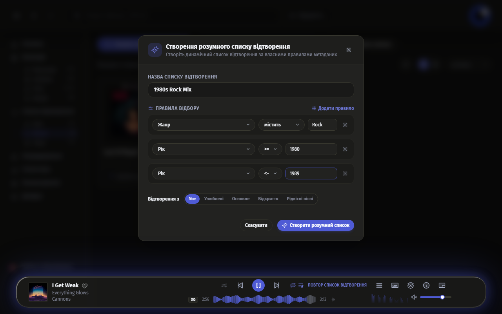
Списки за BPM
Списки за BPM використовують тег BPM кожної пісні. Luminous не вимірює темп, тому пісні без тега BPM не додаються. Створюйте власні діапазони за допомогою розумного списку відтворення.
Категорія
Діапазон BPM
Повільний BPM
60–90
Середній BPM
90–115
Швидкий BPM
115–130
Висока енергія BPM
130–150
Екстремальний BPM
150+
Керування списком відтворення
•
Двічі клацніть назву, щоб перейменувати.
•
Перетягуйте рядки, щоб змінити порядок. Виберіть кілька, щоб перемістити їх разом.
•
Клацніть заголовок стовпця, щоб відсортувати, або введіть текст у поле фільтра, щоб звузити список.
•
Кнопками видалення прибирайте дубльовані чи недоступні пісні, а Очистити список повністю очищає список.
•
Клацніть правою кнопкою миші заголовок стовпця, щоб додати стовпець Дата додавання.
Імпорт і експорт
•
Імпортуйте або експортуйте списки відтворення .m3u, .m3u8, .pls і .xspf.
•
Під час експорту виберіть Використовувати відносні (переносні) шляхи до файлів, щоб список працював в іншій папці чи на іншому комп’ютері.
Основи
Статистика
Статистика показує ваше прослуховування. Її обчислено на вашому комп’ютері, і вона нікуди не надсилається.
•
Виберіть Останні 7 днів, Останні 28 днів або Останній рік.
•
Дивіться найкращих виконавців, альбоми, пісні та жанри. Клацніть будь-що, щоб відкрити.
•
Теплова карта показує хвилини прослуховування за день разом із показниками Поточна серія і Найдовша серія.
•
Час доби показує, коли ви слухаєте найбільше.
•
Щоб щось виключити, клацніть це правою кнопкою миші будь-де й виберіть Не враховувати в статистиці.
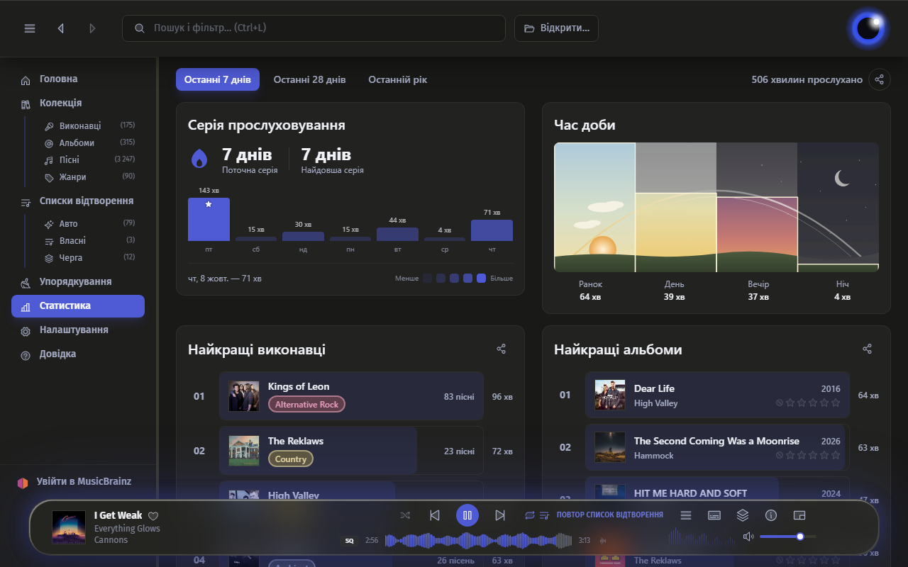
Основи
Тексти пісень
Увімкніть Тексти пісень у рядку програвача. Поточний рядок підсвічується в такт музиці.
•
Клацніть рядок, щоб перейти до нього.
•
Отримати знову повторно шукає текст.
•
Змінити виправляє текст або синхронізацію.
•
Текст без часових міток відображається як звичайний текст.
•
Для інструментальної композиції виберіть Позначити як інструментальну, щоб Luminous припинив пошук.
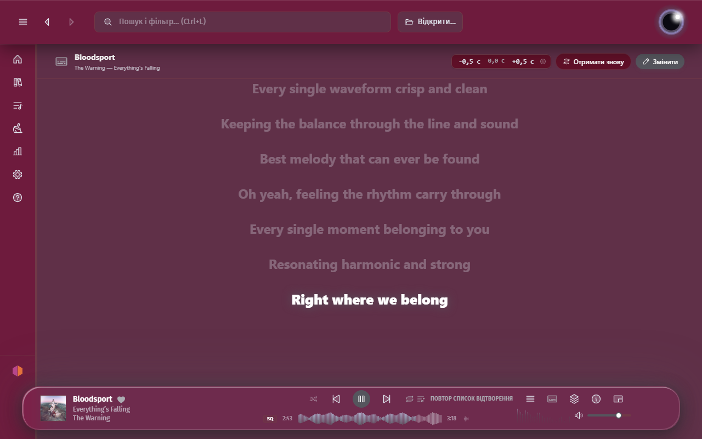
Додатково
Розширений пошук
Введіть у рядку пошуку терміни field:value, щоб відфільтрувати всю бібліотеку. Наприклад, genre:rock rating:>=4 знаходить рок-пісні з оцінкою 4 зірки або вище.
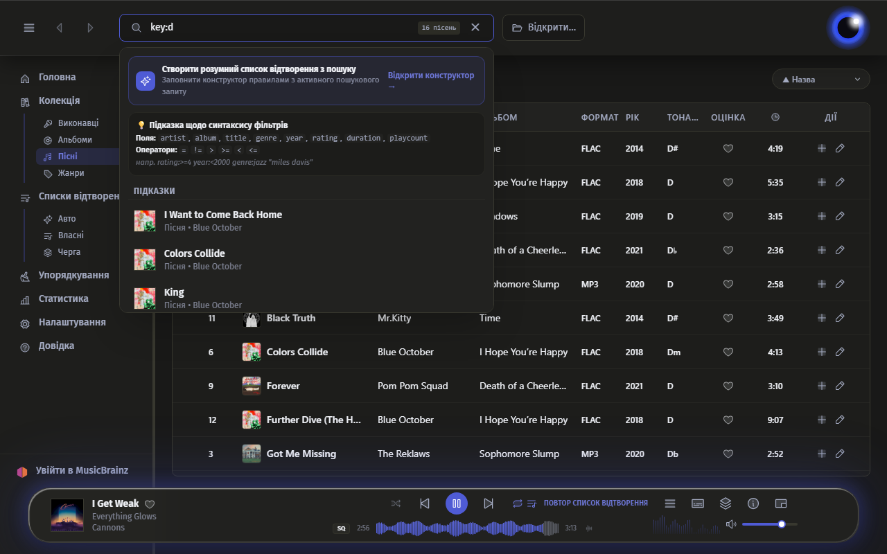
Синтаксис
•
Текстове поле без оператора означає містить: genre:rock збігається з будь-яким жанром, що містить «rock».
•
Числове поле без оператора означає точно: year:1994 збігається лише з 1994.
•
Кілька термінів мають збігатися одночасно: rating:>=4 year:<2000 genre:rock.
•
Слова без двокрапки шукаються в назві, виконавцеві й альбомі: rating:>=4 "tom cochrane".
•
Значення з пробілами беріть у лапки: artist:"tom cochrane". Назви полів не залежать від регістру.
Оператори
Символ
Значення
=
дорівнює
!=
не дорівнює
>
більше за
>=
більше або дорівнює
<
менше за
<=
менше або дорівнює
(немає)
містить (текст) / дорівнює (число)
Поля
Усі поля працюють у рядку пошуку та як правила розумного списку відтворення.
Поле (псевдоніми)
Тип
Збігається з
artist
текст
Виконавець (якщо немає — виконавець альбому)
artist_tag
текст
Тег виконавця
album_artist
текст
Лише виконавець альбому
album
текст
Назва альбому
title
текст
Назва композиції
genre
текст
Жанр
composer
текст
Композитор
key / initial_key
текст
Тональність (напр. «D», «Am», «D♭»)
bpm
число
Удари за хвилину
year
число
Рік випуску
originalyear / original_year
число
Рік першого випуску (на відміну від перевидання)
rating / stars
число
Оцінка в зірках, 0–5
playcount / plays
число
Кількість відтворень
skipcount / skips
число
Кількість пропусків
lastplayed / last_played
число
Мітка часу останнього відтворення (секунди Unix)
added
число
Мітка часу додавання (секунди Unix)
track / track_number
число
№ композиції
disc / disc_number
число
Номер диска
bitrate
число
Бітрейт (кбіт/с)
samplerate / sample_rate
число
Частота дискретизації (Гц)
bitdepth / bit_depth
число
Розрядність
channels
число
Кількість каналів
compilation
0/1
Ознака збірки
duration / length
тривалість
Тривалість композиції — див. нижче
duration приймає секунди (duration:>180), MM:SS (duration:>3:30) або H:MM:SS (duration:<1:02:03).
Збереження пошуку як розумного списку відтворення
Щойно пошук міститиме термін field:value, клацніть Відкрити конструктор → у випадному списку. Кожен термін стає правилом; додайте ще, назвіть список і збережіть.
Приклади
Мета
Запит
Рок-пісні з оцінкою від 4 зірок, випущені до 2000 року
rating:>=4 year:<2000 genre:rock
Пісні в тональності ре
key:d
Композиції з високим темпом (120–130 BPM)
bpm:>=120 bpm:<=130
Вільний текст і поля разом
rating:>=4 "tom cochrane"
Лише альбоми-збірки
compilation:1
Композиції довші за 3:30
duration:>3:30
Додатково
Розширене впорядкування
Створіть власний шаблон, вибравши Власний на сторінці Упорядкування.
Змінні шаблону
Комбінуйте їх із власним текстом. Візьміть частину у { }, щоб вона пропускалася, коли в композиції немає значення; завершіть її символом / усередині дужок, щоб вона стала папкою.
Змінна
Підставляється як
%albumartist
Основний виконавець альбому
%artist
Виконавець композиції
%album
Назва альбому
%disc
Номер диска
%track
№ композиції
%title
Назва композиції
%year
Рік випуску
%genre
Жанр
%track3
№ композиції, доповнений нулями до трьох цифр
%rawtrack
№ композиції точно такий, як у тегу, без доповнення нулями
Приклади
%disc-%track
2-07
Disc %disc
Disc 2
%year - %album
2019 - Reservoir
{%album/}
Додає папку з назвою альбому, лише якщо в композиції він є
{%disc-}%track
Пропускає «1-», якщо немає номера диска: 07 або 1-07
{%track }%title
Додає «07 » перед назвою, лише якщо є № композиції
{%track-}%title
Додає «07-» перед назвою, лише якщо є № композиції
Налаштування
Загальні
•
Мова / Language: мова меню, кнопок, повідомлень і цього посібника.
•
Початок тижня: неділя або понеділок, для тижневих чартів і статистики.
•
Стиль оцінювання пісень: серце, 5 зірок або обидва.
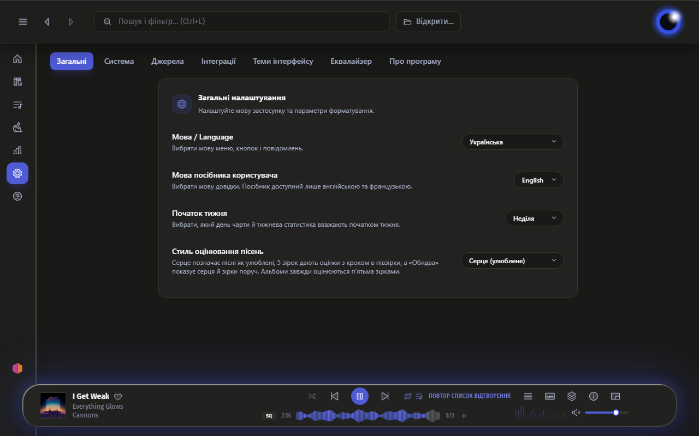
Налаштування
Система
•
Зробити Luminous музичним плеєром за замовчуванням (Windows): відкриває «Програми за замовчуванням» у Windows, щоб вибрати типи файлів, які відкриває Luminous.
•
Згортати в область сповіщень: закриття вікна ховає Luminous в області сповіщень. Клацніть правою кнопкою миші піктограму, щоб отримати доступ до «Відтворення/Пауза», «Наступна пісня» і «Попередня пісня».
•
Запускати під час входу в систему: запускає Luminous, коли ви входите в систему.
•
Експортувати діагностику: зберігає файл журналу недавніх збоїв і помилок, який можна додати до звіту про помилку.
•
Розташування сховища даних: де зберігаються база даних бібліотеки, кеш обкладинок і параметри. ZIP для Windows використовує Портативний режим і зберігає все в папці data поруч із програмою. Папки з музикою на тому самому диску переходять разом із ним, коли на іншому комп’ютері диск отримує іншу літеру. У Linux покладіть порожній файл із назвою portable поруч з AppImage, щоб зробити те саме.
•
Оновлення: перевірка наявності нової версії та вибір дії, коли вона з’явилася. Установлення з Microsoft Store оновлюються самі.
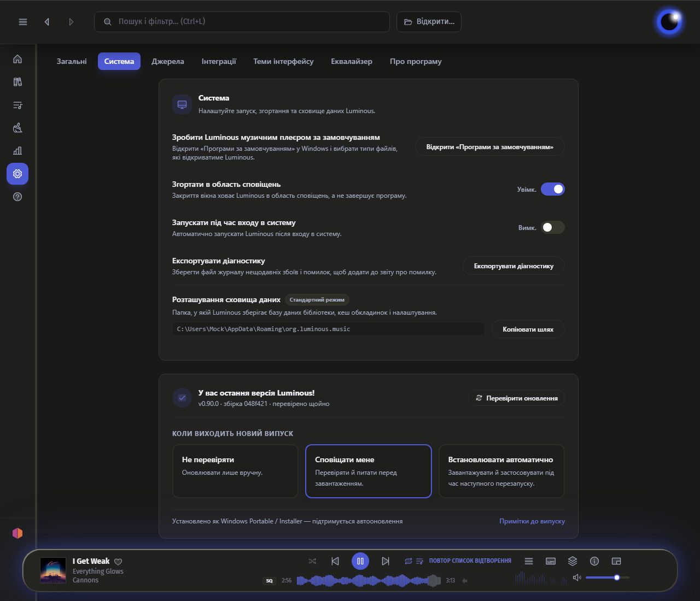
Налаштування
Джерела
Папки
•
Клацніть Додати папку, щоб додати папку з музикою. Нові й змінені файли з’являються самі.
•
Вимкніть Відстеження папок у реальному часі, щоб перевіряти зміни лише під час пересканування.
•
Пересканувати бібліотеку під час запуску перевіряє ваші папки щоразу, коли відкривається Luminous.
•
Пересканувати бібліотеку шукає зміни; Примусове повне пересканування перечитує все.
•
Зберігати обкладинки поруч із музикою зберігає обкладинки як cover.jpg у папках альбомів, а фото виконавців — як artist.jpg. Наявні обкладинки в папках ніколи не перезаписуються.
•
Якщо папка позначена як недоступна, бо змінилася літера диска або ви перемістили музику, клацніть Указати розташування… і виберіть нове розташування. Пісні зберігають кількість відтворень, оцінки та списки відтворення.
•
Щоб перемістити папку, яка досі доступна, клацніть Змінити відомості про папку, а потім Змінити розташування….
Віддалена музика
•
Віддалений WebDAV: потокове відтворення з Nextcloud, ownCloud, Synology та інших серверів WebDAV.
•
Медіасервери: підключіть сервер OpenSubsonic, як-от Navidrome, Gonic чи LMS. Luminous синхронізує його бібліотеку й може повертати відомості про ваші відтворення.
•
Віддалена музика доступна лише для читання: зміни тегів і обкладинок залишаються в Luminous.
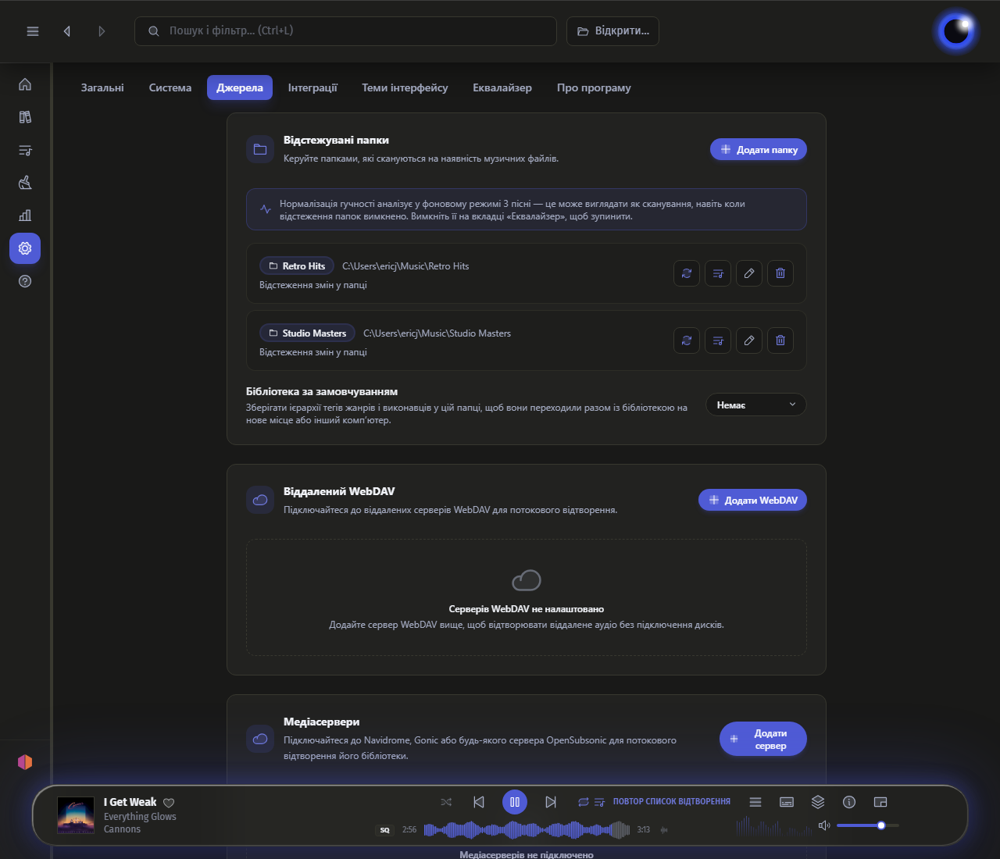
Налаштування
Інтеграції
Кожна інтеграція необов’язкова. Вимкніть будь-яку з них, щоб ця частина Luminous працювала автономно.
•
Онлайн-сервіси: головний перемикач угорі праворуч. Перемкніть його на Не в мережі, і Luminous не надсилатиме запитів до зовнішніх сервісів (обкладинки, тексти пісень, біографії, ListenBrainz, вхід у MusicBrainz, присутність у Discord і перевірка оновлень); збережені тексти й обкладинки, як і раніше, відображаються, а ваші бібліотеки Subsonic і WebDAV продовжують працювати.
•
Скроблер ListenBrainz: вставте Токен користувача, клацніть Перевірити й зберегти, а потім увімкніть скроблінг. Виберіть, чи надсилати також оцінки. Перемикайте трансляцію «зараз грає» і призупиняйте скроблінг у спливному вікні профілю MusicBrainz на бічній панелі.
•
Призупинити весь скроблінг (у спливному вікні профілю на бічній панелі або в області сповіщень) зупиняє надсилання без від’єднання. Прослуховування без мережі очікують, доки ви не клацнете Синхронізувати зараз.
•
MusicBrainz Picard: Luminous знаходить Picard або дає змогу вказати його вручну, щоб ви могли відкривати файли в Picard.
•
Discord Rich Presence: показуйте в Discord, що ви слухаєте. Настільна програма Discord має бути запущена.
•
fanart.tv: отримуйте фото виконавців та інші зображення, яких Luminous не знаходить локально. Додайте свій ключ API й клацніть Перевірити й зберегти. Без ключа Luminous використовує зображення з Wikidata.
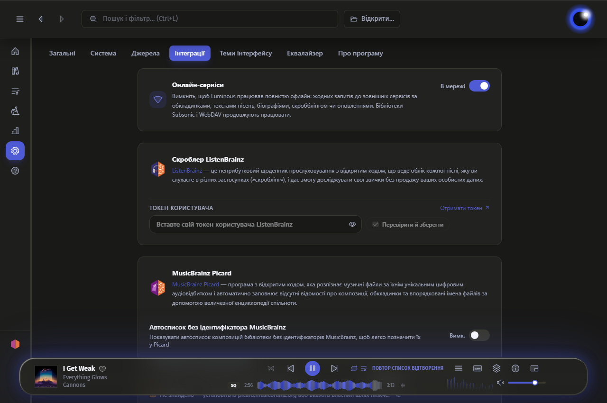
Основи
Упорядкування
Перейменовуйте й переміщуйте файли за їхніми тегами. Нічого не змінюється, доки ви не клацнете Впорядкувати музику.
1
Виберіть шаблон: Стандартний, Альтернативний або Власний, щоб написати свій. Дерево нижче показує попередній перегляд результату.
2
Виберіть призначення: початкову папку бібліотеки або Власна…, щоб указати іншу.
3
Укажіть, чи переміщувати супровідні файли, чи замінювати пробіли підкресленнями та чи змінювати літери з діакритичними знаками.
4
Перевірте попередній перегляд. У ньому лише файли, які буде переміщено, зі старим і новим розташуванням.
5
Клацніть Впорядкувати музику.
•
Увімкніть Автоупорядкування угорі праворуч (або в розділі Налаштування → Джерела), щоб нові композиції й зміни тегів автоматично перейменовувалися та переміщувалися у фоновому режимі.
•
Очистити видаляє відсутні пісні, порожні папки та дубльовані записи.
Знайдіть його в розділі Налаштування → Еквалайзер. Кожна зміна застосовується одразу, навіть під час відтворення пісні.
10 смуг
•
Поставте прапорець Увімкнути еквалайзер, а потім виберіть пресет або сформуйте власну криву.
•
Перетягніть повзунок, щоб підсилити або послабити його частоту, до ±20 дБ.
•
Зменште Попереднє підсилення, коли підсилюєте, щоб гучні фрагменти не спотворювалися.
•
Режими «10 смуг» і «Параметричний» зберігають окремі смуги, попереднє підсилення та пресет, тому перемикання між ними ніколи не змінює іншого.
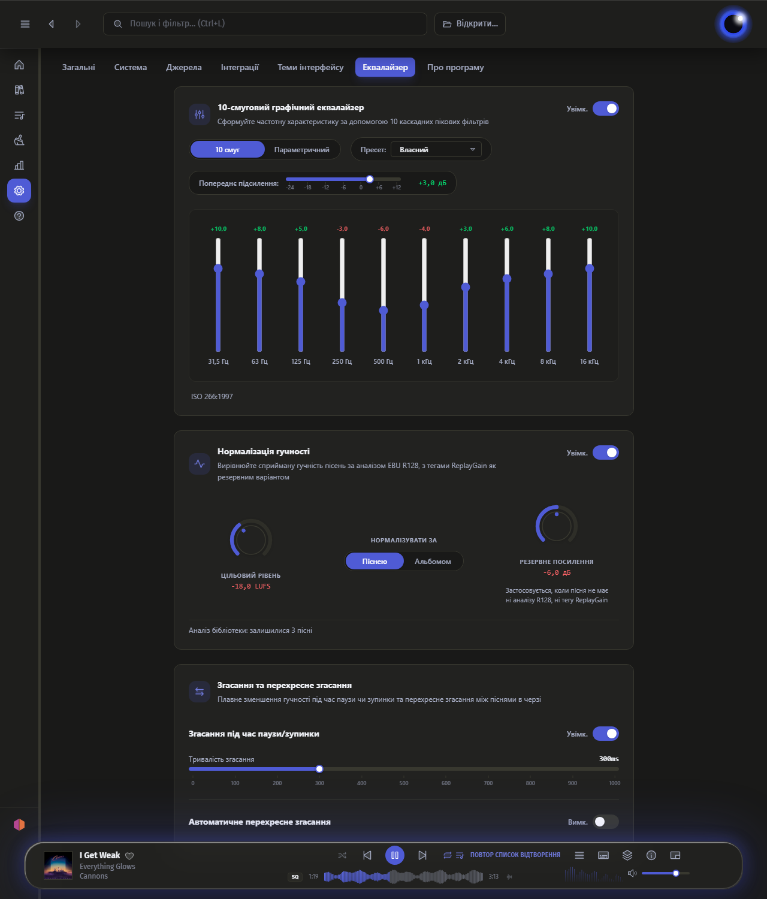
Параметричний
•
Перетягніть вузол, щоб задати його частоту й підсилення. Прокрутіть колесо над ним, щоб зробити його ширшим або вужчим (Q).
•
Двічі клацніть графік, щоб додати смугу, до 20. Таблиця нижче показує тип, значення та перемикач кожної смуги.
•
Скинути смуги повертає плоску характеристику.
•
Меню ⋯ поруч із пресетом містить дії з пресетами:
– Імпорт… завантажує профіль корекції навушників (див. нижче).
– Експорт… зберігає смуги й попереднє підсилення як файл Equalizer APO.
– Зберегти як… зберігає поточні смуги як ваш власний пресет у розділі Мої пресети.
– Перейменувати і Видалити керують вашими власними пресетами.
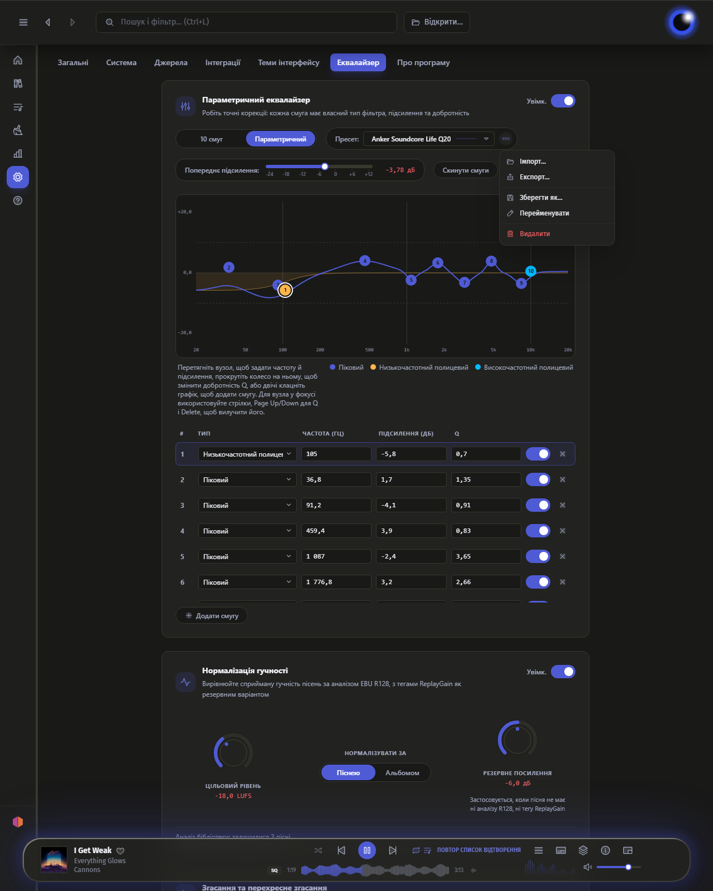
Корекція навушників
•
Знайдіть свої навушники на AutoEq, виберіть EqualizerAPO ParametricEq як програму еквалайзера й завантажте файл налаштувань.
•
У режимі «Параметричний» виберіть Імпорт… у меню ⋯, а потім Вибрати файл… або вставте текст.
•
Профіль зберігається в розділі Мої пресети й застосовується одразу. Якщо Luminous не може відтворити його точно, він указує рядок із проблемою й нічого не змінює.
Нормалізація гучності
•
Увімкніть, щоб вирівняти гучність між піснями.
•
Цільовий рівень задає, наскільки гучно відтворюється все.
•
Виберіть Нормалізувати заАльбомом, щоб зберегти різницю гучності між піснями одного альбому.
•
Пісні, які ще не проаналізовано, використовують теги ReplayGain або Резервне посилення.
Згасання та перехресне згасання
•
Згасання під час паузи/зупинки поступово знижує гучність замість різкого обриву.
•
Перехресне згасання під час ручного перемикання змішує пісні, коли ви їх пропускаєте; Автоматичне перехресне згасання змішує їх наприкінці пісні.
•
Зберігати безперервність у межах альбому зберігає цілісність концертних і концептуальних альбомів.
Налаштування
Теми інтерфейсу
Вибір теми
•
Luminous розфарбовує весь застосунок за обкладинкою альбому, що грає. Сподобався результат? Збережіть його як власну тему.
•
Системна відповідає вашому світлому або темному режиму. Кнопками Світла, Темна і Системна на її картці можна зафіксувати один із них.
•
Клацніть будь-яку тему в розділі Готові теми, щоб перемкнутися на неї.
Теми-доповнення для прихильників (лише у версії Microsoft Store)
•
Додаткові теми з власною графікою й анімацією. Клацніть кнопку на картці (Купити за…, Отримати безкоштовно або Отримати), щоб додати тему, а потім клацніть картку, щоб її використати.
•
Не бачите свою покупку? Клацніть Перевірити покупки.
•
Теми-доповнення зберігають власні кольори; їх не можна редагувати.
Створіть власну тему
•
Відкрийте Конструктор власної теми, щоб задати власні кольори.
•
Щоб додати тему з файлу, клацніть Імпортувати тему. Кожну картку власної теми можна редагувати, експортувати або видаляти.
Рух
•
Якщо в системі ввімкнено зменшення руху, анімації ковзання перетворюються на плавні згасання.
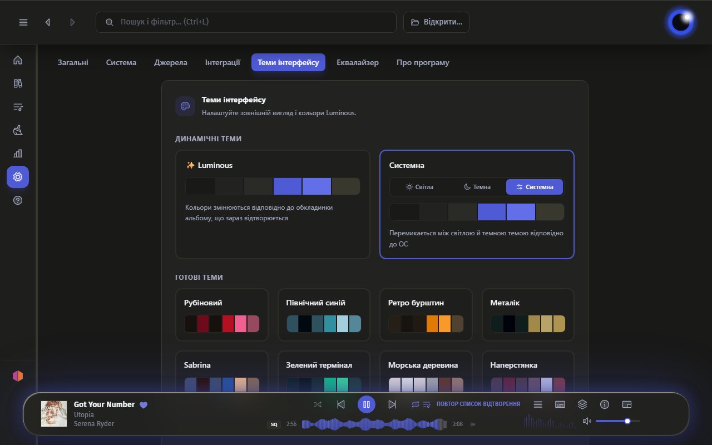
Поради й хитрощі
Комбінації клавіш
Відтворення
Пробіл
Відтворення / пауза
←
Попередня пісня
→
Наступна пісня
↑
Збільшити гучність
↓
Зменшити гучність
Page Up
Перемотати назад на 10 с
Page Down
Перемотати вперед на 10 с
Навігація
CtrlL
Перейти до пошуку
Esc
Закрити випадний список пошуку
CtrlO
Відкрити пісню
Ctrl[
Назад
Ctrl]
Уперед
CtrlA
Вибрати все в поточному поданні списку
Розташування та вигляд
Ctrl1
Перемкнути ліву бічну панель
Ctrl2
Перемкнути режим занурення
Ctrl3абоCtrlI
Перемкнути інформаційну панель
CtrlM
Перемкнути міні-плеєр
Ctrl,
Відкрити налаштування
Ctrl/
Показати цей список
Бічні кнопки миші та окремі клавіші «назад/вперед» у браузері також переміщують у межах історії. Медіакнопки на клавіатурі чи пристрої також керують відтворенням.
Налаштування
Про програму та подяки
Вихідний код доступний на GitHub, разом із відомостями про авторів кожної бібліотеки, яку використовує Luminous, і ліцензією, на умовах якої він поширюється.
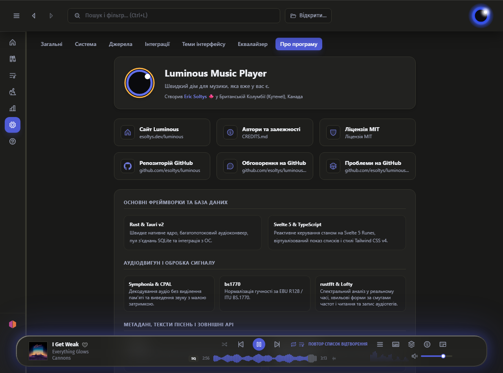
Поради й хитрощі
Контекстні меню та вибір кількох елементів
•
Клацніть правою кнопкою миші пісню, щоб побачити «Відтворити», «Додати до списку відтворення», «Перейти до виконавця», «Перейти до альбому», «Редагувати теги» й інше.
•
Клацніть правою кнопкою миші альбом, щоб побачити Відтворити альбом, Додати до черги, Змінити відомості про альбом, Відкрити в Picard, Картка для поширення…, Закріпити на головній і Не враховувати в статистиці.
•
Shift + клацання вибирає діапазон, Ctrl + клацання додає рядки, а CtrlA вибирає все в списку.
•
Коли вибрано пісні, панель інструментів пропонує Відтворити вибране, Додати до списку відтворення і Скасувати вибір.